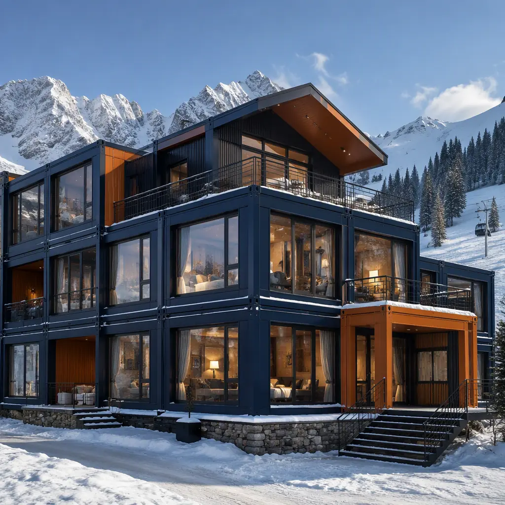
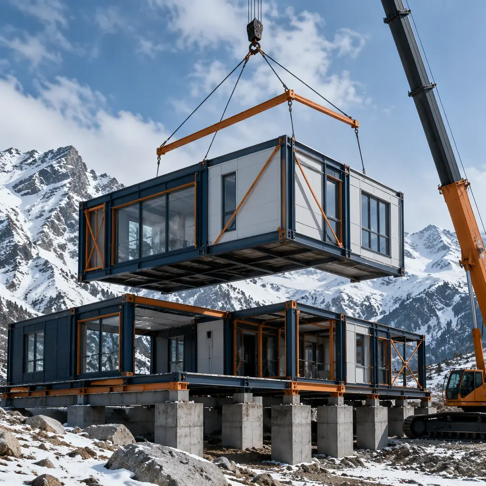
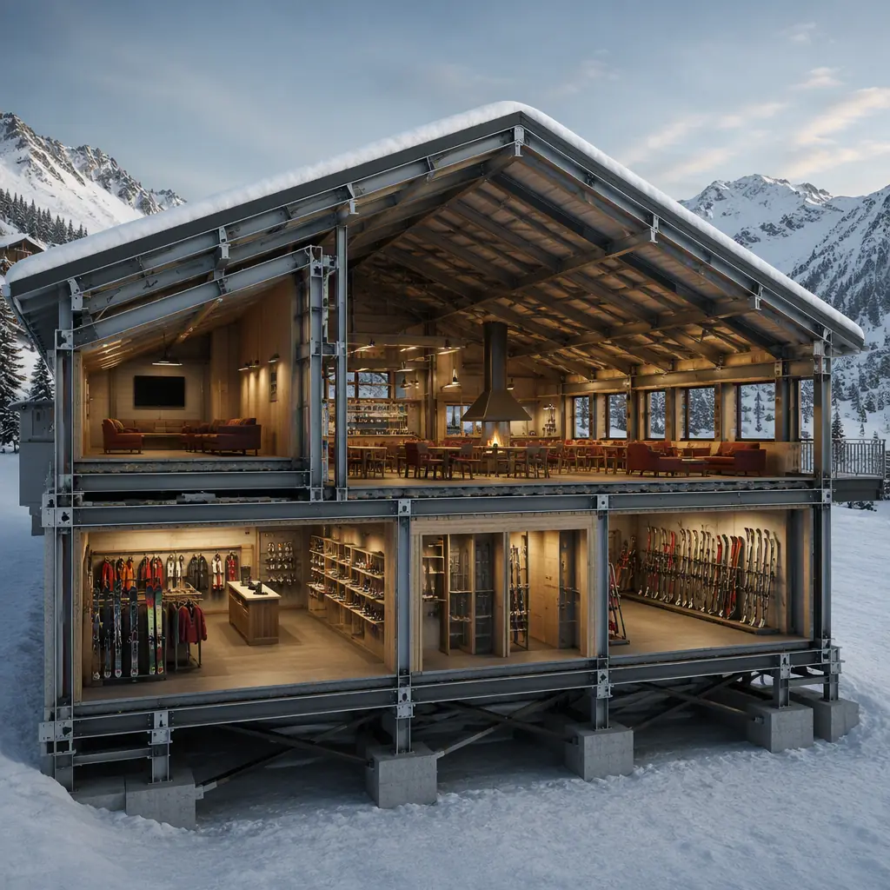
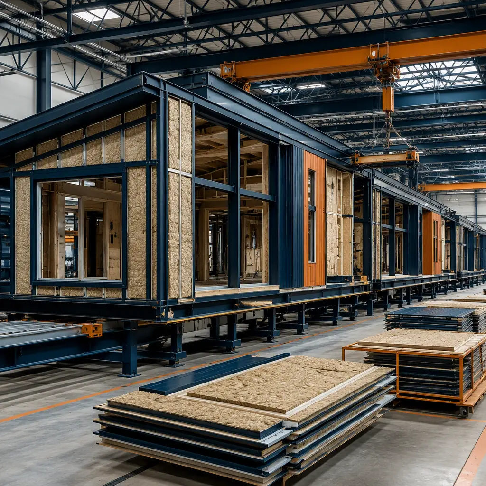

Mountain resorts operate on the most unforgiving construction calendar in commercial real estate: the building season runs from snowmelt in late spring to first snow in October — often five to six months — and missing that window means waiting a full year for the next one. A base lodge, ski-in-ski-out accommodation building, or employee housing complex delivered conventionally takes 10–14 months of on-site work, so it inherently spans two seasons and one brutal winter of exposed foundations. Modular prefabricated construction changes the math: factory-built steel-frame modules are manufactured through the winter while the site is still under snow, then delivered and set in a concentrated crane campaign in spring — with the building weather-tight in 4–8 weeks. Resorts from Colorado to the Alps use this model to open base lodges and staff housing for the November season that conventional builders could not deliver until the following March. The same schedule logic we document for modular resort and extended-stay construction applies at mountain altitude, with snow-load and freeze-thaw engineering layered on top. This guide covers the building programs — base lodges, slopeside lodging, employee housing, and lift terminals — plus the structural engineering, cost structure, and procurement path for ski resorts considering prefabricated delivery.

Why Mountain Sites Break Conventional Construction
Resort elevation introduces four compounding problems that modular delivery specifically neutralizes:
- The construction season is measured in weeks, not months. Above 7,000 ft, frost depth reaches 4–6 ft, the ground is snow-covered 5–7 months a year, and concrete pours are temperature-limited. A conventional 10–14 month build must survive an exposed winter; a modular build only needs the foundation and site utilities completed in the first season, because the building itself arrives pre-finished. Foundation strategy for harsh sites is covered in our modular foundation systems guide.
- Snow loads dictate the structure. Mountain resorts sit in high snow-load zones: IBC ground snow loads of 100–200 psf are common at ski elevations, versus 20–40 psf in lowland commercial zones. Steel-frame modular construction handles this with factory-computed member sizing and connection details — the same engineering discipline we document for modular extreme-climate construction.
- Labor is scarce and expensive at altitude. Mountain towns compete for a tiny pool of construction workers against a short season, pushing field labor costs 30–60% above metro benchmarks. Factory production moves the labor to a plant where the cost and schedule are controlled; the field crew shrinks to a crane crew and connection teams.
- Access roads and logistics are constrained. Narrow mountain roads, weight limits, and seasonal closures restrict deliveries. Modules travel as standard flatbed loads on a planned schedule — the logistics framework in our modular transportation and logistics guide — avoiding the continuous material convoy a conventional build requires.


Base Lodges — The Revenue Hub of the Mountain
The base lodge is the resort's commercial heart: ski rental and retail space, cafeteria and bar, restrooms and lockers, guest services, and usually a second floor of dining with slope-facing glazing. A typical base lodge runs 15,000–30,000 sq ft and conventionally takes 12–16 months to build — meaning two winter exposures. Modular delivery splits it into a package of 10–20 factory modules: rental and retail modules with casework and POS pre-installed, food-service modules with commercial kitchen equipment, hood systems and grease traps factory-commissioned (the same kitchen program we detail for modular restaurant construction), and restroom/locker modules as factory-built wet rooms. The modules arrive in spring, set on the prepared foundation, and connect to utilities in 6–10 weeks — open for the November ski season.
Slope-Side Glazing & The Design Language
Resort architecture sells the view, and modular design no longer forces a box. Factory modules can carry 10–16 ft glazing spans on the slope-facing elevation, cantilevered balconies for ski-in-ski-out units, and varied roof forms — shed, gable, or butterfly — that break up the module grid. The customization capability is the same one we document for modular design flexibility, and the envelope performance — high-R walls, triple-glazed windows, and vapor-control assemblies for freeze-thaw climates — follows our building envelope systems guide.
Ski-In-Ski-Out Accommodation & Workforce Housing
Resorts face two housing problems at once: guest accommodation at the base and workforce housing for the hundreds of seasonal employees who keep lifts, kitchens, and rentals running. Both are natural modular programs.
- Slopeside guest units. Ski-in-ski-out hotels and condo lodges are delivered as stacked modular units with balconies, boot rooms, and slopeside glazing — the same unitized hotel program we document in how modular hotels cut construction time. A 60-unit slopeside lodge that conventionally spans two seasons can open for a single ski season.
- Employee housing. Workforce housing is the resort's operational bottleneck — many mountain towns have rental vacancy rates near zero, and resorts that cannot house staff cannot run lifts. Modular dormitories and apartment buildings deliver 50–200 beds in one season, with the same program logic we cover in modular workforce housing for remote projects. These units are often the first modules deployed because they unlock the staffing the resort needs to open.
Cost Structure — Modular vs. Conventional Mountain Build
| Building Program | Conventional (Mountain Site) | Modular |
|---|---|---|
| Base lodge (20,000 sq ft) | $6.5–9.5M | $5.2–7.6M |
| Ski-in-ski-out hotel (60 units) | $11–16M | $8.8–12.5M |
| Employee housing (100 beds) | $4.5–6.5M | $3.6–5.2M |
| Winter exposure, weather delay & altitude labor premium | 15–30% of budget | 5–10% of budget |
The 15–25% building cost reduction is only half the story: opening for the November season versus the following March captures a full season of ticket, rental, and lodging revenue — often $1–3M for a mid-size resort. For the full economics, see our 2026 modular cost guide.
Snow Country Codes & Site Engineering
Mountain resort buildings carry a compliance stack that varies dramatically by zone: high snow-load design (IBC ground snow 100–200 psf), freeze-thaw foundation design with insulated slabs and frost walls, wildfire-resistant construction in many western resort areas, and sometimes avalanche-mitigation siting reviews. Modular delivery addresses each in the factory: structural members are sized to the project's snow-load zone, foundations coordinate with frost depth and permafrost risk, and the envelope is built to the climate zone's energy code. Wildfire-resistance requirements — increasingly common at mountain resorts — are covered in our modular wildfire-resistant construction guide, and the energy-performance side of the high-altitude envelope follows our modular energy efficiency guide.

Winterization, Energy & Snow-Season Systems
Mountain buildings must perform through conditions that would defeat standard commercial construction. Modular delivery builds winter resilience into the factory package rather than bolting it on site. The envelope gets high-R wall assemblies (R-25 to R-38 at altitude), triple-glazed or high-performance glazing on slope-facing elevations, and vapor-control detailing for freeze-thaw climates — the same envelope discipline we document in our modular building envelope systems guide. Mechanical systems are sized for extreme temperature deltas and include freeze-protection for plumbing, snowmelt-ready entry mats and roof drainage, and backup power for critical food-service and guest-safety loads. Energy at altitude is expensive — delivered diesel or propane can run 2–3× grid rates — so resorts increasingly pair modular buildings with on-site solar and battery storage, the integration we cover in our modular solar and battery storage guide, and the whole-building energy strategy follows our modular energy efficiency guide.
Lift Terminals, Ticket Offices & Resort Support Buildings
Beyond the lodge itself, a resort campus needs a constellation of support buildings: lift terminals and ticket offices at the base of each chairlift, ski patrol and first-aid buildings, rental maintenance and tuning shops, and equipment storage. These are small, repeatable, schedule-critical structures — each conventionally taking 4–8 months of mountain-season labor. As factory modules, a lift terminal with ticketing, restrooms, and a small retail nook can be manufactured over winter and set in a single week in spring. Resorts rolling out the same terminal design across multiple lifts benefit from the repeatable-design economics we document for modular franchise and chain rollout construction, and the BIM coordination of a full resort campus — lodges, terminals, housing, and utilities on one site model — follows our modular BIM and digital workflow guide.
Resort Phasing & the Multi-Season Master Plan
Mature resorts build in phases across seasons, and modular delivery fits that cadence precisely. A typical multi-year program might deploy employee housing in year one — unlocking the staffing to operate — a base lodge in year two, and slopeside accommodation in year three, with the factory re-running the same module designs at marginal engineering cost each season. Because the factory holds the digital design files, a resort can order additional units, identical or modified, with a fraction of the design fee a conventional architect would charge for a second building. This repeatable-design economics is the same logic we document for modular chain rollout construction, and the master-plan coordination across seasons follows our modular BIM and digital workflow guide. For developers structuring a multi-season program, the financing structure for phased delivery is covered in our modular construction lending guide.
Off-Season Factory Work & the All-Year Delivery Model
The modular model turns the resort's downtime into production time. While the mountain is under snow and conventional sites sit idle, the factory builds: module fabrication, MEP installation, interior finish, and factory commissioning all happen through the winter months, so the resort's construction program runs 12 months a year instead of five. This matters doubly for resorts that want to expand capacity without ever closing operations — modules for a new lodge wing or staff dormitory are manufactured while the existing base area runs at full occupancy, then set in a short shoulder-season window. The off-season delivery model is the same philosophy we document for modular project risk reduction, and the quality-control framework that keeps winter factory production consistent follows our modular construction quality guide.
Is Modular Right for Your Mountain Project?
Modular mountain delivery delivers the strongest value for base lodges and food-service buildings where factory-commissioned kitchens compress the longest on-site trade, ski-in-ski-out accommodation where the unitized hotel program repeats across floors, employee housing where bed count determines whether the resort can staff its season, and any program where opening for the winter season is worth more than the building itself. For resorts planning phased growth — adding a rental wing, a second lodge, or more staff beds in later seasons — the factory can re-run the same module designs at marginal engineering cost, the expansion logic we document for modular additions and expansions. And for investors structuring the project, the financing options in our modular construction lending guide apply directly to season-critical resort programs.